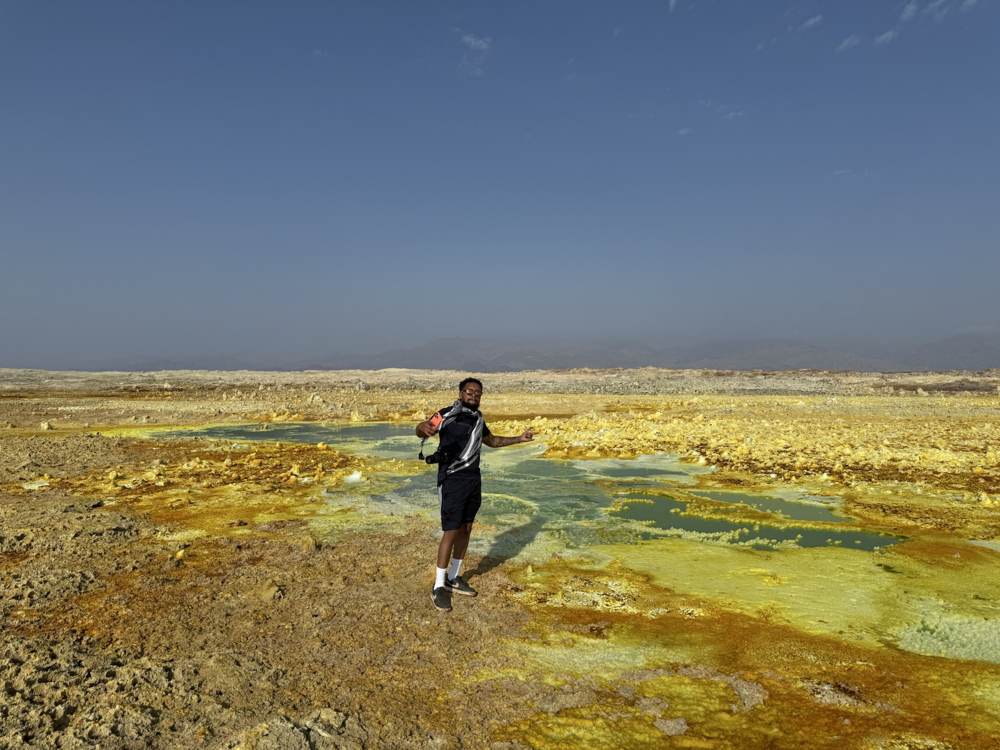
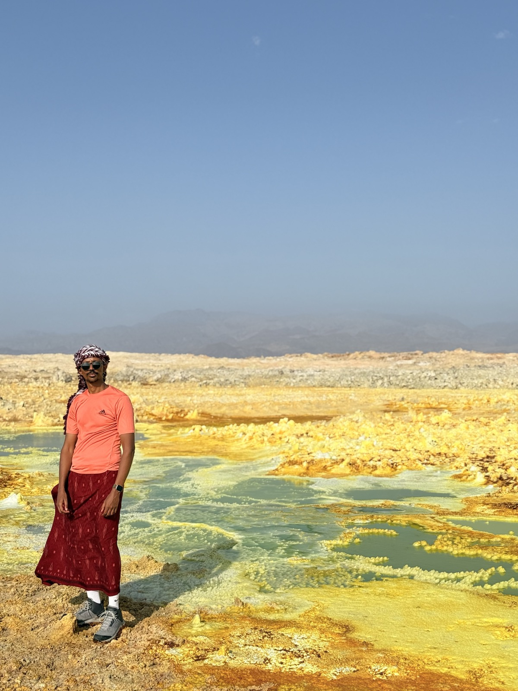

Field documentary · Creative direction
AFAR
Led story, logistics, and production for a documentary made in one of Ethiopia's most demanding environments.

01 · Challenge
The team set out to tell a grounded travel and culture story in a remote region where heat, access, distance, and production logistics shaped every decision.
The work needed to remain visually strong while adapting continuously to field conditions.
02 · My role
I led story development and the video production team, coordinated travel logistics with Michael Feleke, and handled filming, sound, editing, and color across the project.
- Story development
- Travel logistics
- Production leadership
- Filming and sound
- Editing and color
03 · Process
Make the work visible.
Prepare
Built the story and travel plan around a remote, conditions-led production.
Adapt
Directed the team and adjusted the shooting plan as access, heat, and locations changed.
Distribute
Finished multiple pieces designed for documentary and social viewing contexts.
04 · Execution
A field documentary and supporting travel content that presents Afar through landscape, people, movement, and the realities of the journey itself.
05 · Results
The outcome.




Tools & methods
- Sony FX3
- DaVinci Resolve
- Field production
- Travel logistics
Related links